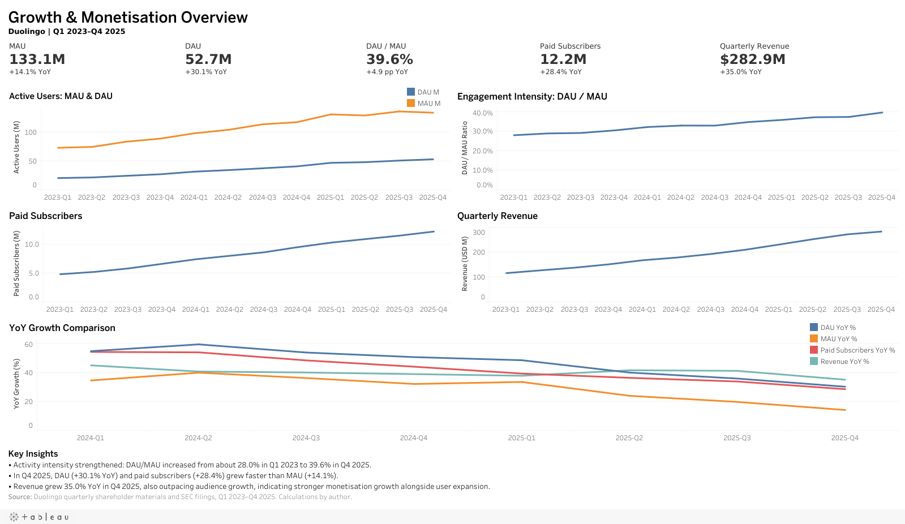
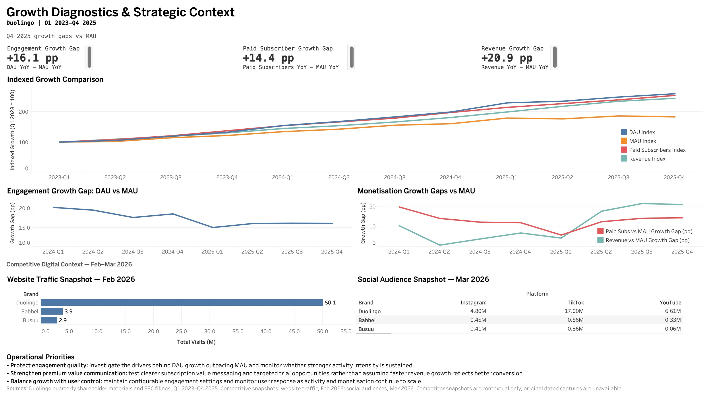

Duolingo 增长与营销运营分析
产品运营 / 用户运营 / 增长运营 / 综合运营
分析时点：2026 年 3 月。公司表现：2023 Q1-2025 Q4。
Duolingo 的用户规模扩大时，活跃与商业化是否同步增强？2023-2025 年，日常活跃与商业化增长均快于 MAU。本案例据此提出产品运营、用户运营与增长运营的监控和调查重点。
项目工作：明确业务问题，统一公开指标口径，核对来源与计算，完成两页 Tableau 展示，并将发现转成运营调查重点。
打开 Tableau Public 交互式 Dashboard01 / 业务问题
仅看用户规模，无法完整判断经营表现。本项目结合日常活跃、付费订阅和收入，判断增长结构，并提出运营团队下一步应持续监控和深入调查的问题。
- 12 个季度内，用户规模、日常活跃与商业化如何变化？
- DAU、付费订阅和收入是否增长得比 MAU 更快？
- 历史竞品快照能补充什么背景？
- 哪些运营重点需要内部数据继续验证？
02 / 数据与方法
- 12 个季度：2023 Q1-2025 Q4，来自 Duolingo IR / SEC 官方披露。
- 比较 DAU/MAU、环比、同比及增长指数（2023 Q1 = 100）。
- 网站：2026 年 2 月；社媒：2026 年 3 月，仅作历史背景。
- 来源核对及 SQL / Python 校验支持两页最终 Tableau Dashboard。
增长率按披露数值计算并四舍五入。MAU、DAU 为季度平均人数，付费订阅为期末人数，收入为季度金额。
计算与工具细节
SQL 公式通过 SQLite 兼容适配核对，未验证原生 MySQL 执行。原始数据、处理后 CSV、指标定义与已冻结结论均保留。
口径提醒：DAU/MAU 是汇总活跃强度；增速差使用百分点；增长指数以 2023 Q1 = 100。
03 / 关键发现
- 2023 Q1 至 2025 Q4，DAU 增长 160%，MAU 增长 83%。DAU/MAU 从 28.0% 升至 39.6%（+11.6 个百分点），汇总活跃强度提升。
- 付费订阅用户增长 154%，季度收入增长 145%，均快于 MAU，值得进一步调查商业化驱动因素。
- 到 2025 Q4，MAU 同比增速放缓至 14%，DAU、付费订阅用户和收入分别增长 30%、28% 和 35%。
- 沿用的 2026 年 2-3 月快照显示，三个观察品牌中 Duolingo 数字触达更大。原始历史截图未核实，仅作背景。
最终 Tableau Dashboard
两页最终英文 Tableau 页面，中英文案例共用；点击图片可查看完整尺寸。


04 / 运营含义
以下为拟议运营重点，需要获授权的内部证据、控制评估与免费体验保护指标；尚未实施或验证业务效果。
保护活跃质量
调查 DAU 增长快于 MAU 的驱动因素，并持续观察更高的活跃强度能否维持。
强化会员价值沟通
测试更清晰的订阅价值沟通与定向试用机会，不能将更快的收入增长直接解释为更高的转化效率。
兼顾增长与用户自主控制
保留可配置的互动设置，并在活跃与商业化扩大的过程中持续监控用户反应。
05 / 分析局限
- 公开汇总数据无法衡量 cohort 留存或真实的免费到付费漏斗。
- 竞品快照缺少原始带日期截图，仅用于背景。
- DAU/MAU 描述汇总活跃强度，付费与收入增长无法隔离转化或定价影响。
- 结论为描述性关系，建议尚无实际业务效果验证。
网站与社媒数值沿用历史课程快照。原始带日期截图、准确采集日期与社媒账户链接缺失，历史来源无法独立核实。不能据此推断市场份额、转化、留存或长期趋势。
公司 MAU/DAU 使用其自有分析定义和估算，未经本项目独立测量。